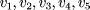
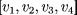
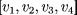
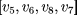
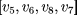

|
 |
 |
 |
|
|
|
|
|
Geometric objects are specified by enclosing a series of
vertices, normals and colors between EZ_Begin and
EZ_End pair.
This pair of routines provides the only way to specify geometrical primitives.
void EZ_Begin(int PType); void EZ_End(void);
Possible primitive types are:
EZ_TRIANGLE_STRIP
EZ_TRIANGLE_FAN
EZ_TRIANGLES
EZ_QUAD_STRIP
EZ_QUADS
EZ_POLYGON /* buggy */
EZ_LINE_STRIP
EZ_LINES
EZ_LINE_LOOP
EZ_POINTS
EZ_TMESH (rectangular triangular mesh, row majored)
EZ_QMESH (rectangular quadrilateral mesh, row majored)
 For the last two primitive types, one must call
For the last two primitive types, one must call
void EZ_SetTQMeshSize right after EZ_Begin. This
function informs the graphical library about the size of the
triangular or rectangular
mesh being processed.
void EZ_SetTQMeshSize(int row, int col);
The only GL calls that are allowed inside an EZ_Begin and EZ_End pair
are
EZ_Vertex23fv
EZ_Normal3fv
EZ_Color3fv
EZ_Index
EZ_CallLists
EZ_Materialfv
EZ_TRIANGLE_STRIP
A triangle strip is series of triangles connected along shared
edges. It is defined by a series of vertices. The first three
vertices define the first triangle. Each subsequent vertex
defines a new triangle using that vertex along with two vertices
from the previous triangle. For example, if
 are the vertices specified between
the EZ_Begin(EZ_TRIANGLE_STRIP) and EZ_End(), then
it defines three triangles, ,
and .
EZ_TRIANGLE_FAN
A triangle fan is a series of triangles share all share
the same first vertex. For example, if
are the vertices specified between
the EZ_Begin(EZ_TRIANGLE_FAN) and EZ_End(), then
it defines three triangles, ,
 and .
and .
EZ_TRIANGLES
This primitive specifies a series of individual triangles.
The triangles does not share vertices. For example,
if are the vertices between
the EZ_Begin(EZ_TRIANGLES) and EZ_End(), then
it defines two triangles, and
.
EZ_QUAD_STRIP
This primitive specifies a quadrilateral strip, a
series of edge-sharing quadrilaterals. The first 4 vertices
define the first quad. Each subsequent two vertices define
a new quad using the last two vertices and the two new vertices,
with the order of the two new vertices swapped. For example,
the sequence  define
three quads: ,
define
three quads: ,
 and .
and .
EZ_QUADS
This primitive specifies a series of individual quads.
The quads do not share vertices. For example,
the sequence define
two quads: and
.
EZ_LINE_STRIP
This primitive defines a polyline.
EZ_LINES
This primitive defines a series of line segments. For example,
the sequence define three line segments,
, and .
EZ_LINE_LOOP
This primitive defines a closed polyline. It is the same as
EZ_LINE_STRIP with the first vertex appended to the
list of specified vertices.
EZ_POINTS
This primitive specifies a sequence of points.
EZ_Vertex23fv specifies the coordinates of a vertex and
EZ_Normal3fv specifies the normal vector at a vertex.
Arguments are either 2 floats or 3 floats or a pointer to 2 or 3
floats. The normal vector is used in lighting calculations.
For example, the following sequence specifies a rectangle.
EZ_Begin(EZ_QUADS); /* begin individual quads */
EZ_Normal3f(1.0, 0.0, 0.0); /* set the normal */
EZ_Vertex2f(0.0, 1.0); /* the first vertex */
EZ_Vertex2f(1.0, 1.0);
EZ_Vertex2f(1.0, 0.0);
EZ_Vertex2f(0.0, 1.0);
EZ_End(); /* end the current object */
%%%%%%%%%%%%%%%%%%%%%%%%%%%%%%%%%%%%%%%%%%%%%%%%%%%%%%%%%%%%%%%%%%%%%%%%%%%%%%%%%
12.8.4 Pixmaps
Support for pixmaps has been added in release 1.38. To display a
pixmap/bitmap on a 3DCanvas, one first call EZ_CreageGLImage
to create an image from EZwgl pixmap (created by EZ_CreateLabelPixmapFrom***),
then use EZ_PutGLImage*** to display the
image in the current draw buffer. Relevent routines are the following.
EZ_GLImage *EZ_CreateGLImage(EZ_Pixmap *pix);
void EZ_GetGLImageWindow(int x, int y, int w, int h, EZ_GLImage **imgRet);
void EZ_GetGLImageXWindow(int x, int y, int w, int h, EZ_GLImage **imgRet);
void EZ_GetGLImageInfo(EZ_GLImage *glimage, Pixmap *pix_ret,
Pixmap *shape_ret, int w_ret, int h_ret);
void EZ_FreeGLImage(EZ_GLImage *glimage);
EZ_Pixmap *EZ_GetLabelPixmapFromGLImage(EZ_GLImage *image);
void EZ_PutGLImage(EZ_GLImage *glimage,
int srcX, int srcY, int srcW, int srcH,
float destX, float destY, float destZ);
void EZ_PutGLImageScreen(EZ_GLImage *glimage,
int srcX, int srcY, int srcW, int srcH,
float destX, float destY, float destZ);
void EZ_PutGLImageWindow(EZ_GLImage *glimage,
int srcX, int srcY, int srcW, int srcH,
int destX, int destY);
void EZ_PutGLImageXWindow(EZ_GLImage *glimage,
int srcX, int srcY, int srcW, int srcH,
int destX, int destY);
|
|
|
|
|
HTML Documentation Maintainance:Arturo Espinosa
<arturo@nuclecu.unam.mx>